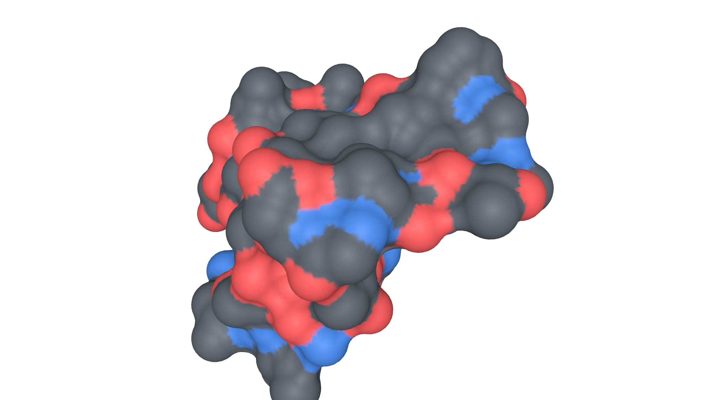
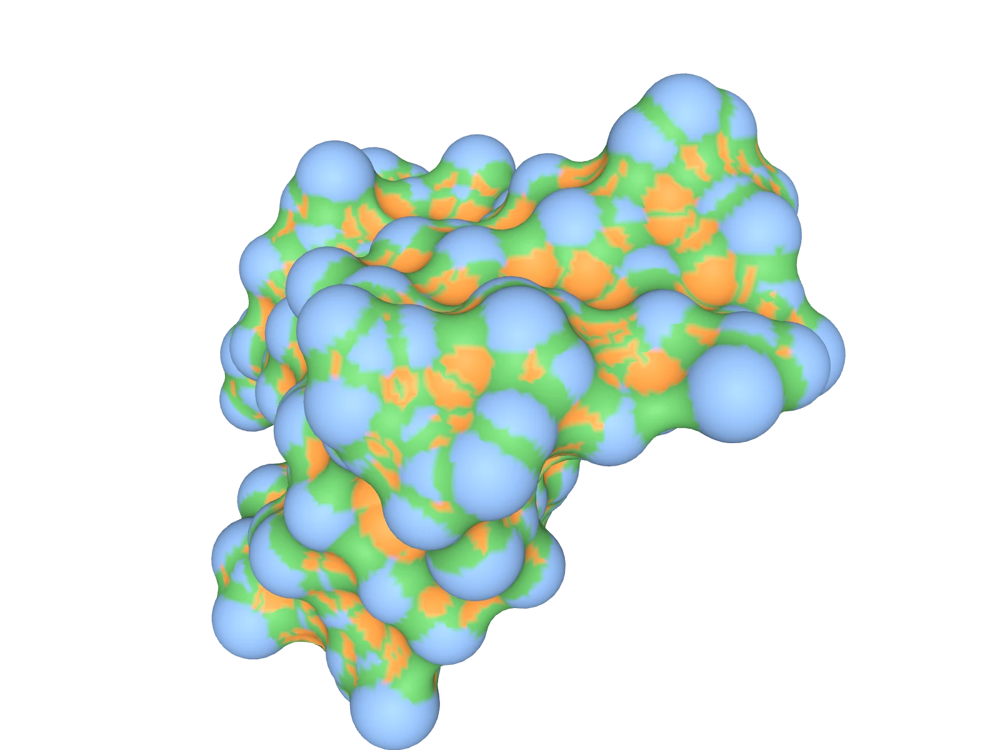
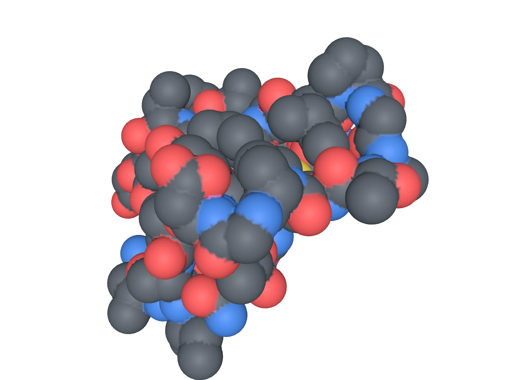
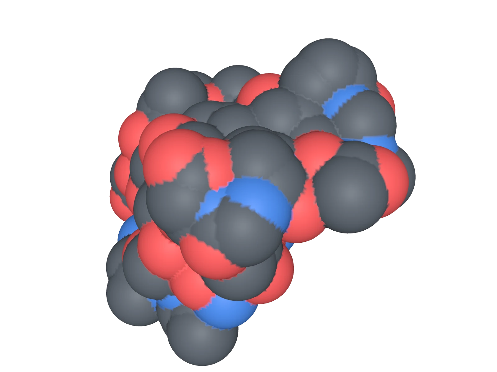
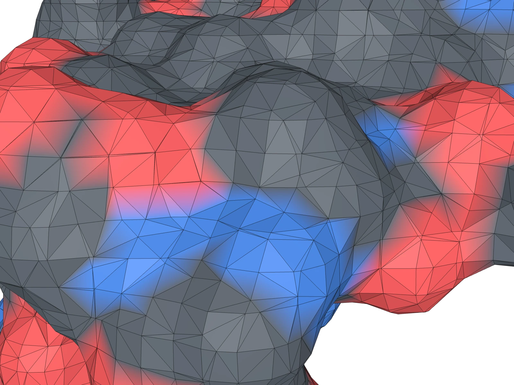
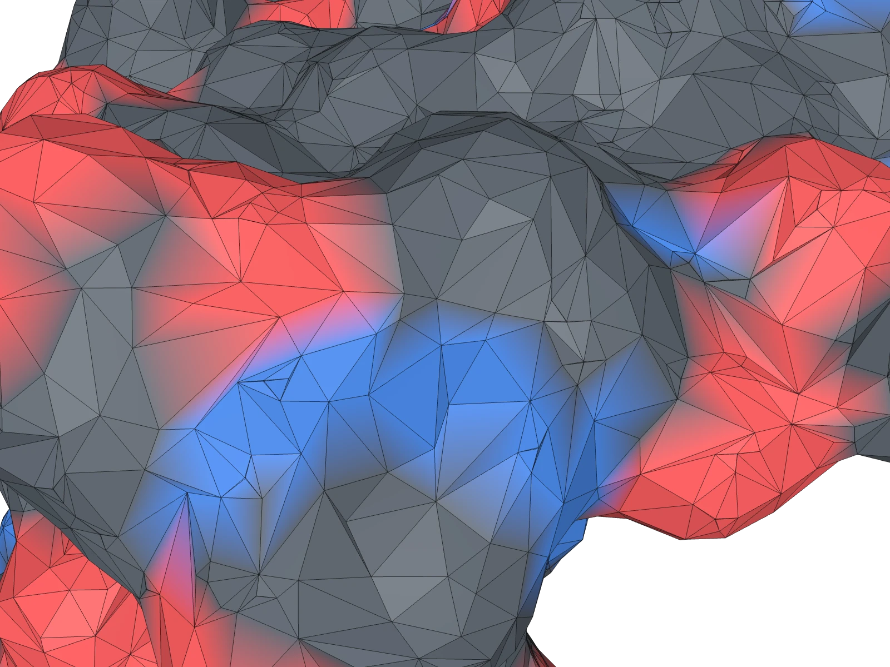
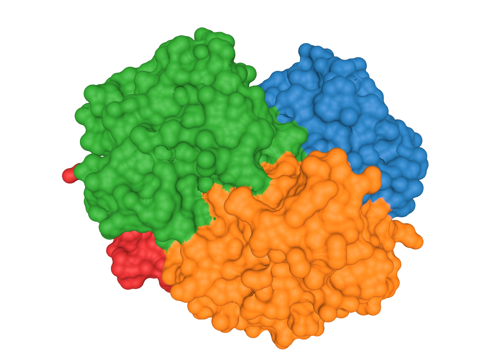
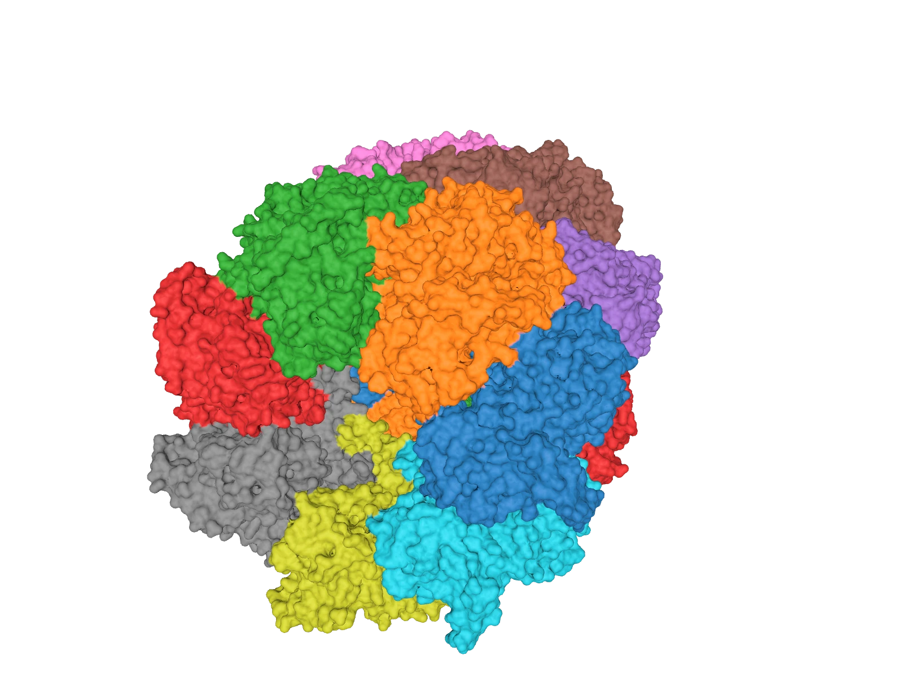
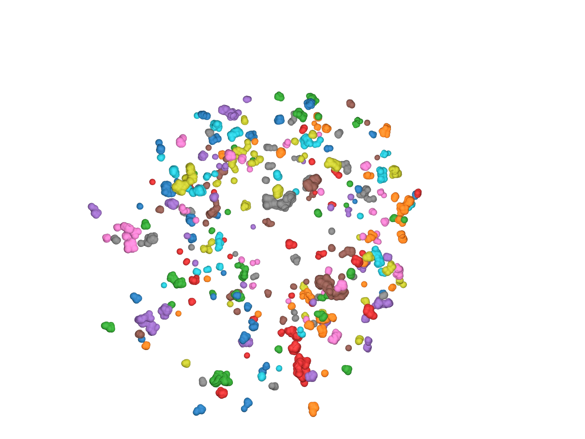
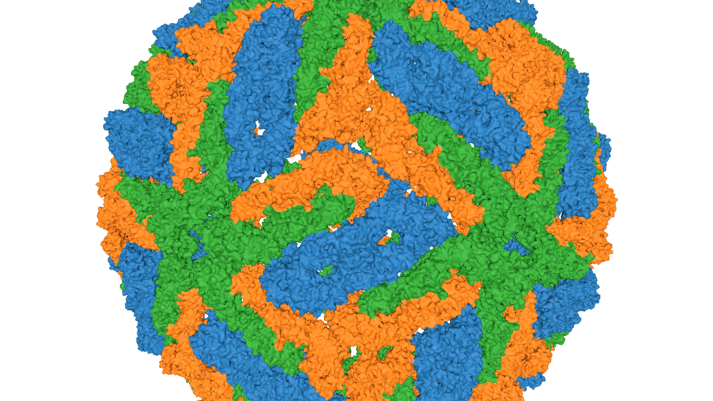

Surfaces straight from sesmesh, with the command that made each one. Explore three of them in 3D, then browse the stills.
Live · WebGL
Turn it around.
Live4HHB haemoglobindrag · click then scroll to zoom · double-click to reset
Loading …
display copy: 16-bit positions, 8-bit normals
Stills · rendered from sesmesh output
Figures.

MISSING IMAGE img/gallery/1crn-element.webp
FIG. 01CrambinSES at 0.25 Å, coloured by the element of the nearest atom (C grey, O red, N blue, S yellow). 111 076 triangles, area 2310 Ų.$ sesmesh 1crn.cif -q high --vertex-colors element

MISSING IMAGE img/gallery/1crn-patch.webp
FIG. 02Patch typesThe three kinds of SES patch: convex (atom contact), saddle (probe rolling along two atoms), concave (probe touching three).$ sesmesh 1crn.cif -q high --vertex-colors patch

MISSING IMAGE img/gallery/1crn-vdw.webp
FIG. 03van der WaalsThe union of the atom spheres: every crease between atoms stays sharp. 198 268 triangles at 0.25 Å.$ sesmesh 1crn.cif -q high --surface vdw --vertex-colors element

MISSING IMAGE img/gallery/1crn-sas.webp
FIG. 04Solvent accessibleTraced by the probe centre: atom radii grown by 1.4 Å. The SES lies between this and the vdW surface.$ sesmesh 1crn.cif -q high --surface sas --vertex-colors element

MISSING IMAGE img/gallery/1crn-coarse.webp
FIG. 05Coarse grid · 13 996 trianglesA 0.7 Å grid: uniform Marching Cubes triangles everywhere, flat areas and tight grooves alike.$ sesmesh 1crn.cif -s 0.7 --vertex-colors element

MISSING IMAGE img/gallery/1crn-decimated.webp
FIG. 06Fine grid, decimated · 13 996 trianglesSame triangle budget from a 0.25 Å grid: large triangles where the surface is flat, small ones where it bends — every vertex still on the exact surface.$ sesmesh 1crn.cif -q high --max-triangles 13996 --vertex-colors element

MISSING IMAGE img/gallery/4hhb-chain.webp
FIG. 07HaemoglobinFour chains, 4 558 atoms, 0.25 Å grid decimated to 641 472 triangles.$ sesmesh 4HHB.cif.gz -q high --vertex-colors chain --decimate 0.5

MISSING IMAGE img/gallery/1aon-chain.webp
FIG. 08GroEL–GroES21 chains, 58 870 atoms at 0.5 Å, decimated to 1.5 M triangles.$ sesmesh 1AON.cif.gz -s 0.5 --vertex-colors chain --max-triangles 1500000

MISSING IMAGE img/gallery/1aon-cavities.webp
FIG. 09GroEL–GroES cavitiesOnly the 285 internal cavities larger than 5 ų, one colour each — the same view as the complex beside it.$ sesmesh 1AON.cif.gz -q high --cavities only --min-cavity-volume 5 --vertex-colors component

MISSING IMAGE img/gallery/1k4r-capsid.webp
FIG. 10Dengue virus capsid · 545 040 atomsAssembly 1 of 1K4R: 60 copies of three envelope chains, built from the file's operators and meshed at 1 Å in about 10 s, then decimated from 9.9 M to 3 M triangles for this picture.$ sesmesh 1K4R.cif.gz --assembly 1 -q draft --vertex-colors chain --max-triangles 3000000
Every picture is a mesh written by the command under it, rendered by render.html in this site (WebGL, no post-processing). Scripts: tools/site/ in the repository.